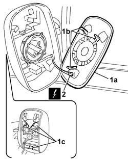

7005R35 door mirror reflector - r r
- Path
- Procedures > 70 FITTINGS > 7005 PASSENGER COMPARTMENT FRONT SIDE DOORS > 7005R front door mirrors > 7005R35 door mirror reflector - r r
- Kind
- repair procedure (removal / refitting; the operation number is the code)
- Applies to
- all engines; all production periods
- Interactive page
- https://sloeber94.github.io/elrnDB-fDbl/en/#/2585024
Applies to: all engines; all production periods
 Removing
Removing
 Refitting
RefittingDisconnect the battery negative terminal.
Op. 7005R37 DOOR MIRROR COVER (ONE), LEFT OR RIGHT - R.R
1. Remove the reflector (1a) from its seating by pressing the retaining lugs (1b) through the holes (1c) on the external rearview mirror.
2. Disconnect the electrical connectors.
Name | Connector | |
|---|---|---|
2 | Left door mirror |
Name | Connector | |
|---|---|---|
2 | Right door mirror |

Applies to: all engines; all production periods
Refitting
RemovingFit the reflector in its seating until the retaining lugs click into place.
Connect the electrical connections.
 | Name | Connector |
|---|---|---|
- | Left door mirror |
| Name | Connector |
|---|---|---|
- | Right door mirror |
Op. 7005R37 DOOR MIRROR COVER (ONE), LEFT OR RIGHT - R.R
Connect the battery negative terminal.